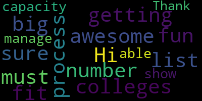

AI-generated transcript of Medford School Committee meeting November 5, 2018
English | español | português | 中国人 | kreyol ayisyen | tiếng việt | ខ្មែរ | русский | عربي | 한국인
Back to all transcripts
[Unidentified]: The secretary will call the roll. Mrs. DeVita, present. Mrs. Kreatzmann, here. Mrs. Mustone, here. Mrs. Ritchie, here.
[Mustone]: Mr. Russo, present.
[Burke]: Mayor Burke, present. Seven present, none absent. Also in attendance is Jasper Sue, our school committee representative. All please rise and salute our flag.
[Edouard-Vincent]: I pledge allegiance to the flag of the United States of America, and to the Republic for and justice for all.
[Burke]: Approval of the minutes of October 15, 2018. There's a motion on the floor for approval of Mr. Benedetto, seconded by Mr. Russo. All those in favor? Aye. All those opposed? Motion passes. Approval of bills, transfer of funds. Mr. Benedetto. I just had a couple questions.
[DiBenedetto]: It's probably very easily explained. On page 7 of 8, it says three quarters of the way down, I'd say, right above the vocational automotive supplies is SPED pro-development expenses. Did they come in? Did we send people out? I was just curious what we were doing for professional development for the special education department.
[Patterson]: Okay, I'll just send an email to them.
[DiBenedetto]: And I had one more question since you're here. It was on page 5 of 8 and the bottom of 4 of 8. Riddell All-American Athletic Officials, the total looks like about $9,000, and I was just wondering, I know it looks like a company, but it just seems like a lot of money for athletic officials, and it might be like five different sports or, I don't know, I just saw a lot of athletic officials individually paid, which I know we hire individual people, but when I saw this large amount, $3,027.40, and then $5,596.39, and a $416.37 together, it's about $9,000. I was just wondering, if you knew a little bit more about that. It seemed like a lot of money.
[Patterson]: Sure. So again, the description is not always indicative of the exact expense. The account code itself has directly in the middle the 0400, which identifies it as a contracted service. So Riddell All-American is a contracted service provider under athletics. So they may be doing shoulder pad renovations, the helmet, instead of buying all new helmets, they can have them refurbished, things of that nature. So again, the exact identifier of this particular invoice, I would have to go back and look that up for you.
[Burke]: Is there a motion on the floor for approval? Offered by Ms. Mustone, seconded by Ms. Kreatz, roll call vote please. Yes. 7 in the affirmative, 0 in the negative. The motion passes. Approval of payrolls. Motion for approval by Ms. Van der Kloot, seconded by Ms. Mustone. Roll call vote, please. Mr. Van der Kloot. Yes.
[DiBenedetto]: Mustone. Yes. Mr. Otero. Yes. Ms. DeWolfson.
[Burke]: Yes.
[DiBenedetto]: Van der Kloot.
[Burke]: Yes. 7 in the affirmative, 0 in the negative. Motion passes. Report of secretary. Ms.
[Unidentified]: Van der Kloot.
[Burke]: Amen. Thank you. Report of committees. None. Community participation? None. Report of the Superintendent. Item 1, report on Andrews Middle School and Brooks Elementary School students. Miss, Madam Superintendent.
[Edouard-Vincent]: Prior to that, I just wanted to make a few brief statements to talk about things that have happened in the district these past two weeks since we haven't met. We've had a lot of exciting activities. Our DA, Marion Ryan, came to the high school and presented the Cut It Out program and she spoke with both our cosmetology and health assistance students and it teaches them about their future work roles and how to notice symptoms of domestic violence and how to refer clients to get help. So that was a wonderful training that did take place at the vocational school. In addition to that, our garden club did host a harvest party. We, as a school committee, had a wonderful retreat, and I'm looking forward to our next session. I continue to work with my mentor, Carla Bear. I had the pleasure of attending the State of the City Luncheon that took place for Mayor Burke, and that was a wonderful opportunity to be with other department heads from the city. The McGlynn School hosted an ethnic pride week where students really were able to celebrate all of their cultures. And it culminated with a wonderful fashion show. And I did get to see school committee member Kreatz there as well. And the students were really excited about demonstrating their pride from where they attended. I also had the opportunity to attend Chief Sacco's retirement, which was a wonderful tribute and honor to his many, many years of service to Medford. And on the instructional front, I'm continuing to conduct instructional rounds. I had the pleasure of walking with Charlene Douglas, who is the MTA president, and we were able to go and look at instruction at both the Brooks and the McGlynn schools last week, so we are continuing to look at instruction and build a collaborative partnership. So there were many, many positive things that happened. The Roberts playground, we had a wonderful ribbon cutting, and I hope for our next school committee meeting to be able to show a short video clip showing the many stages that the playground went through. And so I want to just thank again the CPC, the Roberts Community PTO. I want to thank all the members that worked collaboratively together. I want to thank Cheryl Rodriguez for being a strong parent advocate. And the schoolyard came out beautifully. And so I'm so happy to see that again another collaborative effort producing a beautiful play surface for all students to be able to enjoy. The last piece that I did want to mention was that last week we did have an empty bullet casing that was located on the field of the high school. and that a concerned citizen did turn it over to our school officer, Officer Mazeka, and that the appropriate steps were followed. Police were notified. They investigated. We communicated to families that evening, and the following day, we had nine police officers walked the field with metal detectors. Then they came into the high school and they continued to search the different floors, the high traffic areas. And we had a canine, a dog, come into the school building. Three dogs. to three dogs in the end. We had one dog from Cambridge, one from the state police, and our Medford police dog to search the property and go back and look at the field. And so nothing else was found. I want to just thank Chief Sacco and all the police officers who worked collaboratively to keep Medford safe and that it truly is a priority. So those are the things that I wanted to report out and I was very pleased with that outcome.
[Burke]: Thank you. Thank you, Madam Superintendent. Mr. Ruggiero.
[Ruggiero]: I just had a quick question about the spent ammunition that you found on the field. Was the caliber the same caliber or a different caliber of bullet that was from the prior incident?
[Burke]: It was a 9mm just, not to say just, but it was one single empty bullet.
[Ruggiero]: Was the prior bullet a 9mm?
[Burke]: That was a cartridge.
[Ruggiero]: That was a cartridge. Much different. Thank you.
[Burke]: Are there any other questions? The motion to accept the superintendent's report and place it on file by Mr. Benedetto, seconded by Ms. Kreatz. All those in favor? Aye. All those opposed? Motion granted. Item 1, report on Andrews Middle School and Brooks Elementary School students. Ms. Caldwell.
[Caldwell]: Good evening everyone. So every once in a while we have meetings where I feel it's wonderful to celebrate our young kids and tonight is one of those meetings. We have three students with us, or I think we only have two this evening, that I'd like to tell you a little bit about. One is an Andrews Middle School student, and the Andrews Middle School stands for core values such as excellence through responsibility and respect. And we have one student from the Brooks School that is committed to nurturing collaboration, imagination, creative and creative problem solving. So with these students, let me tell you a little bit about what Orlando and his sisters Delilah and Isabella have done. During this past summer, they collected money for donations for gift cards and were able to pack 90 backpacks for the Andrews Middle School. Wonderful. filled with materials and supplies that could probably last the whole year for these students over at the Andrews. And at the Brooks Elementary School, there were 11 backpacks. So I'd like to call these students up with their principals. And Mr. Downs, the Andrews Middle School principal, said that his student wrote some inspirational notes that he put inside the backpacks. And I've asked him to see if he would read a few for us. So Mr. Downs and Ms. Galussi with us from the Brooks Elementary School, please come up. And our students, Orlando and Isabella. Come on in. On either side of you.
[Burke]: Good evening. I'm sorry.
[ih84fneWXk0_SPEAKER_00]: Welcome, everyone. Thank you for having me this evening with my student Orlando and his sister here. It's always great news to have students provide other students with things that they may not normally be able to provide through their own means. So again, these two students exemplify our core values at the Andrews School. So there are just some notes that I want to share with you, because good news is always nice to have. And so here's some of the notes. You can be anything you want. You can do anything. You are such a great friend. You are so amazing. But the one that I really liked, and it was probably my favorite one that I read, was, be kind, be great, and be you. So those are just some of the quotes. So thank you very much, everyone. And I'll stay here, or do you want me? Yeah.
[Burke]: Well, we have a few citations for Orlando and his sister, Isabella. Wonderful. Would you like to come up? I'm going to read this, OK? It's a certificate of appreciation the Medford Public Schools is proud to recognize Orlando Putnam Bagley for his dedication to the students of Medford. By myself, Mayor Stephanie Muccini-Burke, Chairman Mia Mastone, Vice Chair Erin DiBenedetto, Kathy Kreatz, Secretary Maryse Edward-Vincent, our Superintendent Michael Ruggiero, Paul Russo, and Paulette Van de Kloop. And likewise, we have one for Isabella and her sister Delilah for your dedication to this wonderful effort. You guys did an amazing job and we're so proud of you. Okay, so make sure you give this to your sister.
[SPEAKER_16]: Give her a hug. Oh, sure. Yeah, come on up. So, yeah, I'm Orlando and over the summer I was doing a project for the NJHS and we decided to do a project with Operation Be Kind where we would pack school supplies for underprivileged children and bring them to the school so they could have supplies because, you know, The core thing we were trying to say was that it's important for children to have the tools they need to succeed in school. And we wanted to support that. So they mailed us 100 Operation Be Kind bags. And we got gift certificates from Target and Costco. And we bought lots of school supplies. And we filled each bag with notebooks and pencils. And we also wrote nice messages on cards and put one card in each bag. And we brought 11 bags to the Brooks Elementary School and the Andrews Middle School. And it was pretty successful. Wonderful.
[Burke]: So I don't know if Orlando has got to meet some of the CCSR students that are in the audience. And that's the whole mission, is being kind, being global citizens. So Orlando certainly replicates that at the middle school level.
[Unidentified]: Did you tell him you did something? Yeah. Does he know?
[Burke]: Is there a motion to accept that report and place it on file? So moved by Ms. Vandeclude, seconded by Ms. Mustone. All those in favor? Aye. All those opposed? Motion passes. Report on the Mass Jazz Symposium. Medford High School senior, Chewbacca Durali. I hope I said that right. Chewbacca. Chewbacca. By Dr. Sue Betcha.
[Edouard-Vincent]: Say it right, no? Yes, so Rocco Sieri, our director of science, is going to present the award. Thank you.
[Cieri]: Good evening, everyone. And dad, and sister, come on up.
[Unidentified]: So, Subbasha is a senior this year at Medford High School.
[Cieri]: on the optical monitoring of muscle hemodynamics in humans after exercise. And I have to take breaths through the names, like I always do for the science fair projects, because they have these complex names. But I am going to let Subhash tell you a little bit about why she chose that project and what it meant in layman's terms. Once she presents that project, she received the first prize at the state fair. And then, in the fall, they have a symposium where students present their projects at MIT to a panel. And at that particular event, Subhashra placed second. And she is now invited to go to the AAAS meeting, the American Academy of Sciences, I believe. Advancement of Science. I knew I missed a letter there. Which happens to be the national organization where probably all of the premier scientists in this country participate. And it's a national conference. By participating, she'll have her abstract printed, she'll present there, and then probably interact with many students, but also many scientists, where her work will be shared out. So I'm extremely proud of what she's been able to do and what she accomplished. She is a delight. So it's always a privilege to have students that are able to balance They're sort of the two pieces of communicating and being passionate and the scientific know-how of how to do a project. So it's a real honor. As you know, in the report I did state that there was a cost to the to attend, just informing that it might be even higher than what the cost is. We're kind of opening it up to find a way, a creative way, to get her there. There were two previous students that participated but I'm not sure that they, I was under the impression that those were under a grant at that time that paid for the participation whereas the grant no longer exists for these students so we have to find a way to be a bit more creative to get her there because I think it's a really extraordinary opportunity. The two students that did participate before are scientists in their own right currently doing some fine work and so I know that the path for her is well tread and it's a good one.
[Burke]: I'll betcha we want to congratulate you. What an amazing accomplishment. And I believe I saw you last year at the science fair. I think a few of us may have witnessed your project and we were floored by some of the work you did. And I just wanted you to know, I did reach out to a corporation just this morning and I'm waiting to hear back from the president by Wednesday. So possibly we might have something in the works to cover it. And I'm sure if not, we will figure out a way to get you there. Mr. Benedetto.
[DiBenedetto]: Of course, we would love to receive that corporate sponsor, but if not, I would like to make a motion on the floor to cover the expenses since she'll be representing MEDFED in a way that is so important for our community that there's a motion on the floor to cover the cost. It wouldn't be the first time that this committee has allocated funds in this way. So I'd like to make the motion that if corporate sponsorship does not come through, that we pay the full cost for her.
[Van der Kloot]: Ms. Van der Kloot. Yes, Mayor Burke, I commend you for already reaching out. And if that does come through, that's great, but I'll second my colleague's motion. It's not been unusual for us at all when we have outstanding students to support them and to let them be able to represent us with great pride. So we want to make sure you get to go no matter what.
[Burke]: And before I call the roll, I'd like to invite Subbatcha up so that she could accept this commendation from the Medford School Committee. Certificate of Achievement, the Medford Public Schools is proud to recognize Subbacha Durali for her second place finish at the Mass JS Symposium. And it's offered by all of us here at the school committee, including our superintendent, on an amazing accomplishment. So we're very, very proud of you.
[Unidentified]: Congratulations. Thank you. Thank you. Thank you. Do I use the mic? You don't even have to use the talk mic.
[SPEAKER_05]: So my project for Science Fair last year was inspired by a trip actually to my home country, which is Nepal. I was actually born there. And after the 2015 earthquake, I learned about all of the medical implications that my grandparents had to go through because of their diabetes. They had to pay so much more cost to get pills, just insufficient amounts of pills weekly. to just have basic medication so that they wouldn't experience pain when sitting up or when laying down. And this inspired me to try to do something scientific. I had already done some science fair projects, but I wasn't really completely in love with them, if that makes sense. So in 10th grade, I got to go to the Tufts University's biomedical and science program, Tubers, with Professor Fantini, and he allowed me to use his resources to actually make a project of my own involving mirror infrared spectroscopy. And through that I was able to kind of research on my own path to discover a protocol that would help to create kind of like an early detection device or method that could allow for us in the population, not only in the United States, but globally, to detect onset disease of diabetes and something called peripheral arterial disease so that more people are able to change their lives, not only paying high amounts for medications, but just for themselves. And if that's able to be done through a small device, which anybody can use on their calf muscle, then they'll be able to get a second chance at life. Wow.
[Unidentified]: Thank you so much.
[SPEAKER_05]: Oh, it's so nice to see you again.
[Burke]: Congratulations. And on the motion, authored by Mr. Benedetto, seconded by Ms. Van der Kloot, that if funding is not secured privately, that the school committee, school department, will put up the necessary monies to advance her. On that motion, roll call vote. Madam Secretary. Mr. Benedetto.
[Ruggiero]: Yes. Mrs. Grant. Yes. Mr. Owens. Yes. 7 in the affirmative, 0 in the negative.
[Burke]: Motion passes. Congratulations again. Wonderful job. Report on the Center for Citizenship and Social Responsibility, school year 17-18. Mr. Trotter? Mr. Trotter is the director
[Edouard-Vincent]: CCSR project, and in addition to that, after him, we will have Michael Skorker speaking, who's our program coordinator for CCSR, and we're gonna hear from four wonderful Medford High School students, and I want to say their names correctly, Sam Klugisch, Stephan Lungscher, Nicole Chin, and Tia Ballot. So I look forward to hearing from everyone this evening. Good evening.
[Trotter]: Thank you very much for allowing us to come tonight. At first I want to thank the superintendent and the mayor and the school committee for the continual support over the years for the CCSR. And most of us say CCSR because it's a mouthful to say the Center for Citizenship and Social Responsibilities. But that's the real name. But before I talk about the report, I want to make a couple of announcements. One, we have a walk for veterans on Sunday, November 11th, starting in front of City Hall at 10 o'clock in the morning. There's no fee involved, you can make a donation. selling t-shirts and then there'll be a two and a half mile walk and then afterwards there's a reception at carol's restaurant on main street for free freshmen so i'd like to have that set here so people from tv home can watch it and also that you guys hopefully will come and participate Also, I want to just respond to the fact that we got a contribution from the Boston Foundation for the Crystal Camel Betterment Project. We're really excited about that. That's $125,000 that will be in our possession to use in projects for Crystal's name over the years. Most of it, the vast majority of it will be invested, and money will be taken out of the proceeds from that investment each year to do projects. And so that's a very beneficial thing for not only CCSR, but for the community. And so we're really pleased with that. So now the report. It's a long report, it's 104 pages long, so I thought I'd only read 65 of those. No, actually it's here. So, this is a report that we put together for last year's activities. Michael and I were sitting down thinking about how much we had done last year, and we had no record of it, because it was such a comprehensive year, and we did so much, and the kids did so much, really, not us. And so we wanted to have a record and pass it on to the school committee, and the community, so to show what what students can do. If you give them enough help and support and allow them to be creative, they do amazing things. And this is an example of it. There are other examples like the students in Parkland, Florida. But we're really pleased that our students are doing such positive things. So in the report, there were a whole list of activities that were performed by students K-12. The vast majority were the high school because we have this outstanding person called Michael Skorka who does a fantastic job at the high school. One of our goals this year is to create more Michael Skorkas if we can at the other schools. And this year's crop of leaders, he's one of them too. By the way, I want to recruit those two students from the Andrews. So we do have some really good teachers who are involved this year at the other schools and we look forward to having a bigger program, a bigger report next year. But with that being said, let's get into reports so we can go forward. So as you know, the mission of the CCDR is to develop responsible global citizens and leaders who will be positive contributors to society and will work on important issues such as global warming, addiction, prejudice, racism, pollution, gender bias, poverty, and education and health care. Those are the kinds of topics the students work on in their own world, in their own level. Once again, the students pick the projects with the help of Mr. Skorka and the other advisors. They're not given to them. It's their own ideas. So the projects mean something to them. We believe by providing the proper learning activities and engaging students from all backgrounds, we can prevent some of them from being negative behaviors such as addiction to harmful substances and developing negative perceptions of others such as racism and prejudice. So not only do projects, by working with students and getting them involved in positive work, they're less likely to go to a negative place. And the satisfaction and the feeling of success and creativity is on a positive thing, not a negative thing. And we'd like to start that as early as possible, so we're putting a strong emphasis next year on K-5 and K-5 in the middle schools next year. So that will be a vibrant program, such as the high school. And this is my opinion. Our public education system is the foundation of our democracy and the cauldron of the melting pot. We believe that public and private schools must incorporate social-emotional learning, empathy, compassion, and citizenship in the school experience, and to develop student leaders who will combat racism, bigotry, and hate. If we fail to do this, we miss an opportunity to have a profound impact on the kind of world we want our children to live in. And so that's kind of my philosophy and why I'm involved. I've spent 40 years in education and always felt that something was missing in education and I think this is it. I think we need to do more after school and during school to provide an education that creates leaders and positive people and compassion and empathy. So, just closing, I'd like to have people who don't know about the CCSR or want more information to go to our webpage, which is on the link of the public school's webpage, and information is there, and so I hope people will go there and check it out. And one more thing in closing, There's at least one public school who's doing the same thing next year. I shouldn't say they're doing the same thing. They're applying for the Cummings grant with the same model that we have. That's Burlington. They're going to call it the Center for Citizenship and Social Responsibility. I think a couple others were of interest, like Lynn and Wakefield, but I would really hope that we have more school districts and schools do this type of program to help make the world a better place. So with that, I'm closing. Any questions or comments before I pass it on to Michael?
[Burke]: Thank you Mr. Trotter for all of your efforts, hard work, getting this off the ground. You've done an amazing job.
[Trotter]: Okay, thank you. So no questions then. Michael Skorka?
[Burke]: Mr. Skorka!
[Trotter]: Who's the ace?
[Skorka]: Hi, good evening, everyone. Thank you so much for having us. We're so grateful for all of your support over the years. This is the fourth year with student involvement in the CCSR. When we first started, there were only 18 students. That was our first year with the CCSR. And last year, you've seen the annual report, 200 active students in the district, K through 12. And they created events in which over 1,000 people participated in. throughout the district, which is really exceptional. I also am the high school advisor, and at the high school this year, we have 125 students already enrolled and working on 60 projects, and we will get that project booklet to you soon. We're working on the portfolio. Jasper Hsu is actually the project portfolio manager and has been working tirelessly to get all of the information accurate, because we have so many students at the high school level, really lucky to have him. So you know, we also, when we're not working on projects, the 60 projects that we mentioned, this year we've also attended and some of you were at the Cummings event. We had a really large number of students that participated and went to the Cummings event, which I thought was really nice. It was great because he's been so generous to us. It was great to have that collaboration. Also, Senator Jalen has came to our class and talked about the importance of civic engagement, which was wonderful. That was just last week. You're going to be hearing from two students who worked to help the victims in the Merrimack Valley. They're going to be coming up and talking about that in just a second. As Rich mentioned, the Veterans Day Walk, which is happening this Sunday. We also had a student-run open house, the 8th grade open house, and I think some of you were there as well. We didn't have one second free. The parents chose to come to us because they're really excited about our program. Actually, one parent mentioned that they're talking about this program in Marshfield, which was outstanding. So, like Rich said, we're expanding and we're really excited about it. The newest development, as we'll start this week, is Mr. Tucci and myself and the advisor at the McGlynn Middle School, we're going to be working on an anti-bullying assembly for the McGlynn Middle School and then once we get that all set we're going to be moving that over to the Andrews. So that's sort of down the pipeline that's happening. As you all know, we've already expanded into all elementary schools and all middle schools. Advisors have been hired for all of those schools. We met on October 29th. It was our first meeting with all of the advisors who were present. We talked about what their role would be, how I can support them as the coordinator, and also ideas for projects and fundraisers, etc. It was really great to see such enthusiasm throughout the whole district. People are really excited about doing this. All programs should be really off the ground either this week or the following week, so anybody in the Medford district can participate in the CCSR K-12. I think I've said everything. One more thing is that to foster the collaboration that we were talking about and to build the enthusiasm, what we're going to be doing is we're going to be sending high school CCSR students to go to those meetings at the other school to get those kids excited about it, and that should be happening within the next month. I know they're going next week, I think it's to the Brooks, and then they'll be hopefully going to every single school as well. Does anybody have any questions?
[Van der Kloot]: Not really a question, but I just wanted to say to the students and to yourself, it was so great to see you at the Cummings event. I thought it was, I thought the students who asked questions did a particularly good job and it was really nice, especially since Mr. Cummings has been so grateful and generous to the CCSR. It was so grateful to see the students in attendance and to express their gratitude. Thank you very much for going and for being there and for all the work you're doing both to Rich, Michael, and to the students. Thank you so much.
[DiBenedetto]: Mr. Russo. Oh, I'm sorry. Mr. Benedetto. Thank you. I just had a question. In the book, I didn't see the Roberts School representative when it represented it.
[Skorka]: Last year, the Roberts was not part of the CCSR. But this year, we do have an advisor, Jennifer Devlin. She is going to be the advisor for the Roberts. So every school is represented. We didn't have every school represented last year. We were sort of building the program. But every school will be represented this year.
[DiBenedetto]: You know me. I don't miss a thing.
[Skorka]: You don't miss a thing.
[Trotter]: So you know that obviously we advertised to all the schools and just we couldn't make people do it. Someone's come forward this year so we're really excited.
[DiBenedetto]: That's excellent. I also want to say how appreciative I am that empathy and the whole child learning is really coming out. in these projects, and I think that the joy that they'll get from serving their community will also reflect in everything else they do in life. You're inspiring people. It's great work. Thank you so much. I really appreciate that.
[Skorka]: Mr. Ruggiero, for the community, how often do you guys meet? At the high school level? At the high school level. We meet every other week, and so today we met actually to try to get all of our project portfolio ready and edited. The idea is to meet at least twice a month to sort of check in with projects. Also, of course, on the side, we're checking in with each group individually because there are 60 groups this year, just trying to make sure that the projects are on task and happening. That's been a big struggle, would be the word I'm using, but it's actually been really, like you said, when you see all these projects, it's been really great to see all the passion and enthusiasm the kids have, especially when they get to choose their own projects.
[Burke]: Thank you. And for anyone watching, the Veterans Walk is 10 o'clock Sunday morning on Veterans Day. Right here, City Hall, come on over. Also, you wanted some children, children, I'm so sorry, children, some young adults to come up and speak about the program?
[Skorka]: Yes, I'd like to invite Tia Balot and Nicole Chin up to speak about helping the victims of the Merrimack Valley.
[SPEAKER_03]: Hi, my name is Nicole Chin. Hi, my name is Tia Balot, and we're both juniors at Medford High School, and we are both part of the CSSR program.
[SPEAKER_08]: So for one of our CCSR projects, we created a disaster relief drive for the victims of the gas explosions. And about two months ago, on September 13, the Merrimack Valley gas explosions occurred. And the two of us, along with three other students, created a one-week donation drive to help the families that were affected. We collected donations from many places, including the mayor's office. And we received over $400 in checks and over 200 bags of donations. My parents rented a U-Haul truck and with Mr. Skorka's help, my family and I drove up to Lawrence and we unloaded the donations to two separate places. We donated to the Lawrence Senior Center as well as the Debbie's Treasure Chest.
[Burke]: Very nice.
[SPEAKER_03]: From this experience, with this project, as well as the CCSR member in general, we've learned a lot, and we've learned what it means to be part of a community and how to be a good citizen. There are several issues within our society that we wish to change, and we realize the only way to bring about this change is to do something about it. Being a student means more than just what we learn in school. We are the next generation, and we have the power to change the world. And the CCSR allows us to go beyond our school curriculum and gives us the opportunity to address the problems we see around us today. The CCSR program is not only important to Nicole and myself and the members, but it's also important to the improvement of our community. It gives the young people in Medford a voice and the chance to attain the skills needed to become a positive leader and a positive contributor to the world and also to our community.
[SPEAKER_08]: And the CCSR has affected our lives greatly and has given us a chance to project ourselves and show what we really are passionate about. And we would like to thank you all for allowing us to speak today and for listening to us. Thank you. And now we would like to introduce our fellow CCSR members, Sam Klugisch and Stephan Langsher.
[SPEAKER_00]: Hello, my name is Stephan Langsher. And I'm Sam Glogish. We're both sophomores at Medford High School and members of the CCSR. And our project this year was to clean up McDonald Park, specifically the waterfront area, boat launch area of the McDonald Park. We're both members of the cross-country team, and that is our home course. And we're running races and having practices there. We noticed a lot of trash, and we didn't really like it. So we decided that on weekends and free days, possibly tomorrow, to go out and collect trash and make it a much nicer space for the community, for the cross-country team and anyone else who might want to be there. We went out a couple weeks ago and we found a lot more trash than we thought and it's just made us like we got to do this and we really want to get it as nice as we can so that other people and ourselves in years to come can enjoy it.
[SPEAKER_12]: There's not much more to say. People have done a really good job. CCSR has really allowed us to do such a thing because it's really all about, for us, helping the community, which is pretty much the main goal of the CCSR. And we really liked it. It really went nicely because we were down there and we saw the trash and I turned to Stephanie and I go, this is our CCSR project. I feel like without the CCSR, Medford would be much different than what it is. The CCSR really does so much to help the community, to make that sense of citizenship feel really strong in this great city.
[Burke]: I'm really proud of all of you and last year I got to meet many of you with some of the projects and what I found astounding was how two people would come in one week and then the next week one of those people would be with a new group so everybody was working on multiple projects at the same time so really accomplishing a lot and with over a hundred students I know that you can really make things happen and we've noticed and we're very very proud of your efforts and how you've built community and you are our next leaders, so congratulations.
[Jasper Hsu]: Hi, I just wanted to speak on the CCSR because I think it's a fantabulous program. I've been running the project portfolio, which you'll be getting next month hopefully, and I've been doing that for three years. So I have seen personally and talked with a bunch of groups on just their amazing projects, whether it be cultural inclusivity or environmental improvement or things along that manner. And I think one of the greatest parts about it is that these projects are student-led. So they get to choose what manner their project is carried out with. what topic they're going to be focusing on. And then we have amazing people like Mr. Richard Trotta and like a Skorka here just to enable us to pursue our passions and really give back to the community. So this is a program that I really truly endorse and I hope that it continues on into the future.
[Burke]: Absolutely. Very good. Thank you. Thank you all. Would you like to close, Mr.?
[Trotter]: One more shameless plug, the walk on Sundays is coordinated by City Mayor's office as well as the CCSR, so we want to thank you for providing support for the walk. And hopefully we'll see you all there. Thank you.
[Van der Kloot]: You bet. Ms. Van der Kloot. So I'm not sure whether I can make it on Monday, but I, uh, on Sunday, Sunday, Sunday, but I know that I can start off the donations, so here you go.
[Unidentified]: Save her a t-shirt.
[Burke]: Very good. Well, thank you all. What a great, this is a great night. Very nice. Thank you so much.
[Edouard-Vincent]: And we'll see you Sunday. Thank you.
[Burke]: Motion to accept this report and place it on file by Mr. Benedetto, seconded by Mr. Rousseau. All those in favor? Aye. All those opposed? Motion passes. Report on 2018 Medford High School, Medford Volk Technical High School College Fair.
[Edouard-Vincent]: And I'd like to see Amelia Jensen come forward, our Director of Guidance, to update us.
[SPEAKER_06]: Hi, good evening everyone. Thank you for having me. I'm here tonight to present a report on our 2018 MHS and VTHS College Fair. 24th, we hosted over 99, no exactly 99 public and private colleges and universities, community colleges, military branches, and support programs and technical schools. On the following page you'll see a list of all of the schools that were in attendance. This is a yearly tradition that we do and we held it this year in the gymnasium at Medford
[Unidentified]: PM. This event was all evening long.
[SPEAKER_06]: We had a wonderful mix of 9th through 12th grade students and parents. We also had students and parents not only from the Medford community, but from the surrounding Medford community. We invite local and private schools and public schools to come to our high school. So not every high school in the area hosts their own college fair, which is why some of them come to ours. In conjunction with the college fair, the special education department also hosted a parent and student presentation titled, The Transition to College for Students with IEPs and 504 Accommodation Plans. This presentation's focus was on what students should be doing to prepare for college, the college application process, and what special education students should do to supplement their application. We had a representative from Newberry College there to speak. She was the Disability Services Coordinator, and she spoke about the transition planning and being able to identify what supports are available in colleges to help students transition. Overall, this was a very successful evening, so I'm happy to answer any questions that you may have.
[Burke]: Does anyone have any questions for Ms. Jensen? Ms. Mostona?
[Mustone]: Not a question, but just it goes with your college fair night. Tomorrow night at the Danvers Port Yacht Club, there's over 20 military colleges and universities who have their own college fair. Oh, wow. Someone had asked me to share that. So tomorrow is Wednesday, November 7, 7 p.m. at Danvers Port Yacht Club, over 20 military colleges and universities. So that's FYI. Wednesday or Tuesday? Wednesday. Wednesday the 7th. November 7th. Thank you. Thank you.
[DiBenedetto]: Did anyone else? Ms. Domenico? I just had a quick question on students with IEPs and 504 plans. Is their presentation the same time as the college night? Because some students could go to that presentation and still need to go.
[SPEAKER_06]: Yes, so we plan to have that at 5.30 to 6.30 and then the college fair starts at 6.30. So parents can come early, parents and students can come early, see that presentation in the Karen Theater and then still make the college fair.
[Burke]: Perfect. This already happened?
[DiBenedetto]: Yes. I was just making sure that when it's planned it's not at the same exact time so that students had an opportunity.
[Ruseau]: Hi. So what's the process for colleges getting on this list?
[SPEAKER_06]: Yeah. So we invite every college who has previously come. We also look at what colleges students have applied to to see what their current interest is and what the interest was in previous years. We invite about 300 or more colleges every year. And then colleges that, for one reason or another, we didn't find out about it because we're in their I can't remember what it's called, but it's the registry for college fairs. So we're in that so they can see what college fairs are in the area and sign up for it. So for example, if there are, for some reason, there are schools from the southwestern part of the United States visiting the northeast during that time, they will usually come to our college fair.
[Ruseau]: That's awesome. And 99 is a big number. I'm sure it must be fun to fit them in there. But what is the capacity of, like, If we had 300 show up, would you be able to manage that?
[SPEAKER_06]: I think we could manage... We had 110 tables and that was somewhat squeezing it, but we could always... What we have done in the past is we've put 3 to every 2 table. So I don't know the math on that, but I think we could probably squeeze about 200. The issue would, I think, become parking if we did that.
[Ruseau]: Thank you.
[Burke]: Is there a motion on the floor to accept this report and place it on file by Mr. Agiro, seconded by Ms. Mustone. All those in favor?
[Mustone]: Aye.
[SPEAKER_06]: All those opposed? Motion passes. Thank you. Oh, and can I also say that on Wednesday night, November 7th, we're having our financial aid night and a MIFA representative will be in attendance. She also works at Tufts in the financial aid department and she'll be putting on a presentation. Excellent. Thank you. Thank you very much.
[Burke]: Report on elementary highlights.
[Edouard-Vincent]: Our associate superintendent, Ms. Diane Caldwell.
[Caldwell]: Such a good night for me. Every once in a while, you start really positive and we end really positive. So thank you for indulging me this evening. The superintendent did allude to some of the wonderful events that are taking place in our elementary buildings earlier. One was the multicultural week at the McGlynn Elementary School where they had step dance and Irish folktales, art and food, and a fashion show. And students would come to the microphone early in the morning to say good morning in their native language. At the Columbus Elementary School, some of you, maybe all of you, attended. I was busy at the high school that day. But we had Jump Start read for the record, maybe something beautiful, a book that was read. And if you go to Pepe's Gas Station, you can see the beautiful artwork to make that connection, highlighting building literacy. And Dr. K told me over 420 participants to jumpstart. At the Roberts School, I was proud to attend their STEM fair. And Mr. Cieri was there as well. I'd like to thank Joanne McKay, a fourth grade teacher, and Ms. Rodriguez, who organized that. The children learned to make kazoos, volcanoes, engineering, seedy spinners, And my very favorite one was gumdrop engineering activity. You'd be surprised how you put those gumdrops together, although I wanted to eat them too. And the Brooks Elementary School, we had a fall fest where there was games, crafts, food and entertainment, as well as an open mic night. I don't know if any of you have ever gone to that, but Michael Allen usually does that and does a phenomenal job. So I'm very happy to talk about the elementary highlights. As you know, we do literacy nights and math nights as well as our STEM nights, and I'm happy to get those dates to you when they come up and invite you all to that as well. And maybe in the next few meetings, we'll be able to highlight the McGlenn Middle School and the Andrews Middle School highlights.
[Edouard-Vincent]: Any questions? Ms. Caldwell, could you mention the Read for Bingo, the Reading Bingo that's taking place this evening?
[Caldwell]: Oh, you know, sometimes I forget about my many hats that I wear, so thank you, Superintendent Vincent. Tonight, Title I is sponsoring Bingo for Books, and so my Title I staff, this is all organized, I must say, by Michelle, my mighty Michelle, I call her. We had, this began at about 5 o'clock, and we had pizza about 5.30 with the kids, and the staff family that's including parents. And so this is November's National Literacy Month, so we talk a little bit about the importance of literacy and reading to your children. And then we play bingo for books for the kids. And the prize is, you guessed it, a book or a bunch of books at the end of the evening. So, yes, thank you for bringing that up.
[Burke]: Any questions? Good. Are there any questions? Is there a motion on the floor to accept the report and place it on file? Mr. Russo, seconded by Ms. Vanden Heuvel. All those in favor? Aye. All those opposed? Motion passes. Negotiation on legal matters, are there any? None. Okay. New business. Be it resolved that the Medford School Committee express its sincere condolences to the family of Jack Forcier. Mr. Forcier was a 2011 graduate of Medford High School. Be it resolved that the Medford School Committee express its sincere condolences to the family of Michael Caudry. Mr. Caudry was the father of Andrew's middle school teacher, Sarah Caudry. Be it resolved that the Medford School Committee express its sincere condolences to the family of Joseph Luongo. Mr. Luongo was the uncle of Andrew's middle school teacher, Lisa Luongo. Also be it resolved that the Medford School Committee expresses sincere condolences to the family of Harvey Howell. Mr. Howell was the father of former EL Director Leslie Trotta and father-in-law of former Director of Technology and Fine Arts and current CCSR Director Richard Trotta. Also at this time if we could send out our condolences to the families of those that were murdered at the Temple of Worship Synagogue in Pittsburgh. Our thoughts and prayers are with them and the whole community, including our own Jewish community, that we feel the pain with them. And also the first responders that ran into the synagogue to help those and also got injured in the line of duty. So our thoughts and prayers are with them. If we could all just rise for a moment of silence, please. Thank you. That looks like it's it. Is there a motion to adjourn? So moved. This meeting is now adjourned.
Mustone
total time: 0.57 minutes
total words: 81
|
Burke
total time: 9.07 minutes
total words: 1305
|
Edouard-Vincent
total time: 5.59 minutes
total words: 771
|
DiBenedetto
total time: 3.03 minutes
total words: 442
|
Ruggiero
total time: 0.42 minutes
total words: 63
|
Van der Kloot
total time: 1.1 minutes
total words: 212

|
Ruseau
total time: 0.31 minutes
total words: 52

|
|
|
|
|
|
|
|
|
|
|
|
Back to all transcripts
{kind=link}
{kind=link}
{kind=link}
{kind=link}
{kind=link}
{kind=link}